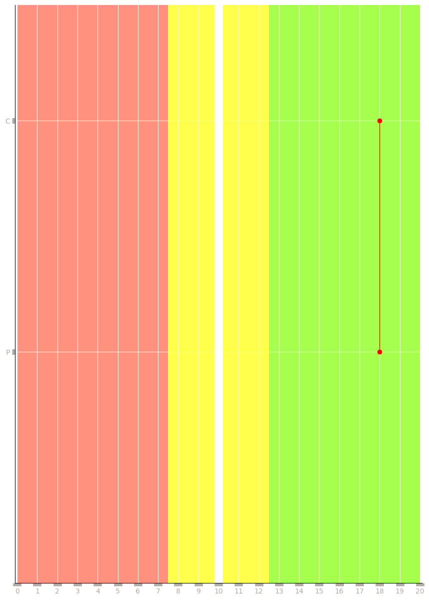

Evaluación Neurocognitiva de 1
| Nombre | ID | Fecha | Género |
|---|---|---|---|
| bernardo orozco | o | 17/November/2020 | Masculino |
| Fecha de Nacimiento | Edad | Lateralidad | Carrera | Semestre |
|---|---|---|---|---|
| 01/January/2005 | 15 | Diestro | 1 | 1 |
| Educación | Equipo | Examinador |
|---|---|---|
| 1 | 1 | b |
| Prueba | Campo | PD | Pe |
|---|---|---|---|
| COMP V | MVC | 0 | 1 |
| MVCt | 0 | 1 | |
| DENOM | DV | 0 | 1 |
| DVt | 0 | 1 |
